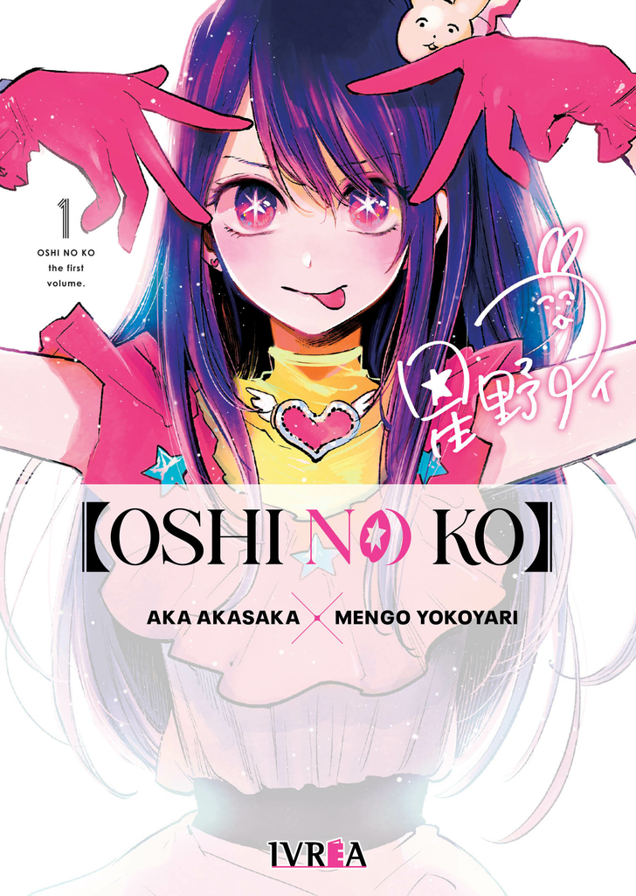

Oshi No Ko
Ai Hoshino es una talentosa y hermosa idol de 16 años. Está en el mejor momento de su carrera, sus fanáticos la adoran y hacen lo que sea por ella. Repentinamente, decide tomarse un descanso del mundo del espectáculo debido a algunos problemas de salud. Resulta que, en realidad, está embarazada de gemelos. Haciendo caso omiso a los consejos de su representante, Ai llega a la oficina de Goro, un ginecólogo de una zona rural de Japón que, para su sorpresa, es fanático suyo. Pero este encuentro fortuito se verá interrumpido por otro fan como él y muere… ¡para renacer como Aquamarine Hoshino, uno de los hijos recién nacidos de Ai!
Precio: $5000